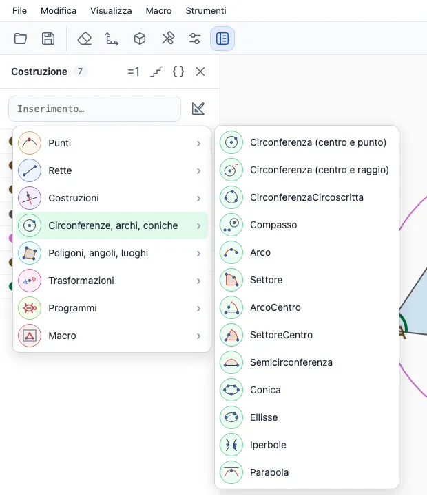

Il menu degli strumenti

Uso
- , a destra della riga di inserimento, apre il menu: le famiglie dell’anello, stessi colori, stesso ordine, poi i loro strumenti al passaggio del puntatore o al tocco.
- Il menu contiene tutti gli strumenti dell’anello e altri ancora (contrassegno anello qui sotto). Le famiglie Piani e Solidi e gli strumenti marcati 3D compaiono solo nella vista 3D.
- La famiglia Programmi, propria del menu, crea tartarughe e pulsanti (vedi Blocchi e tartaruga).
- Il primo oggetto selezionato occupa qualsiasi posto che il suo tipo accetta: per una perpendicolare, la retta può venire prima del punto.
- Gli argomenti si selezionano anche nel pannello «Costruzione»: le righe degli oggetti che lo strumento accetta sono evidenziate in verde, le altre sbiadite. Vi si può selezionare anche un oggetto nascosto. Un punto vi si seleziona solo se esiste già, e l’intersezione di due curve è la prima. Finché lo strumento è attivo, un clic su una riga non la modifica. Una riga già selezionata diventa blu, con il suo posto nel comando (1, 2…).
- Lo strumento è persistente: dopo ogni oggetto, attende di nuovo il suo primo argomento. Il pulsante del menu prende la sua icona e la barra mostra una fascia con Fatto.
- Uscita: Fatto, Esc, la ✕ del suggerimento, il pulsante del menu (che riapre il menu), la gomma, il passo dopo passo o un clic nella riga di inserimento. Annulla, ripristina, le proprietà e la vista 3D mantengono lo strumento.
Con una selezione
Gli oggetti selezionati prima diventano gli argomenti dello strumento scelto: vedi Costruire per selezione multipla.
Tutti gli strumenti
Per ogni strumento: ciò che si seleziona, poi la riga scritta.
Punti
-
PuntoanelloIl punto che si tocca: libero in uno spazio vuoto, su un oggetto o all’intersezione di due oggetti.
Punto(c, t) -
IntersezioneanelloUn incrocio con un solo tocco, oppure i due oggetti uno dopo l’altro.
Intersezione(a, b) -
PuntoMedioanelloDue punti, oppure un segmento.
PuntoMedio(A, B) -
CentroanelloUna circonferenza: il suo centro.
Centro(c) -
AltraIntersezioneDue oggetti, poi un punto già posto su una delle loro intersezioni: il punto d’intersezione più lontano da esso.
AltraIntersezione(a, b, P) -
IncentroTre punti, vertici di un triangolo: il centro della sua circonferenza inscritta.
Incentro(A, B, C) -
BaricentroTre punti: il baricentro del triangolo.
Baricentro(A, B, C) -
CircocentroTre punti: il centro della circonferenza circoscritta.
Circocentro(A, B, C) -
OrtocentroTre punti: l’ortocentro del triangolo.
Ortocentro(A, B, C)
Rette
-
SegmentoanelloDue punti, i suoi estremi.
Segmento(A, B) -
RettaanelloDue punti della retta.
Retta(A, B) -
SemirettaanelloDue punti: l’origine, poi un punto della semiretta.
Semiretta(A, B) -
VettoreanelloDue punti: l’origine, poi l’estremo.
Vettore(A, B)
Costruzioni
-
PerpendicolareanelloUn punto e una retta, nell’ordine che si preferisce. In 3D, una retta o un piano.
Perpendicolare(P, d) -
ParallelaanelloUn punto e una retta, nell’ordine che si preferisce.
Parallela(P, d) -
AsseSegmentoanelloDue punti, oppure un segmento.
AsseSegmento(A, B) -
BisettriceanelloTre punti: un punto del primo lato, il vertice, un punto del secondo lato.
Bisettrice(A, O, B) -
TangenteUn punto, poi una circonferenza, una conica o il grafico di una funzione. Lo strumento dà la tangente n. 1; cambia questo numero in 2 nella sua riga per l’altra.
Tangente(P, c, 1)
Circonferenze, archi, coniche
-
Circonferenza (centro e punto)anelloIl centro, poi un punto della circonferenza.
Circonferenza(O, A) -
Circonferenza (centro e raggio)anelloSolo il centro: il raggio, di circa 150 pixel, si cambia poi trascinando la circonferenza o nella sua riga.
Circonferenza(O, 3.8) -
CirconferenzaCircoscrittaanelloTre punti della circonferenza.
CirconferenzaCircoscritta(A, B, C) -
Sferaanello3DIl centro, poi un punto della sfera.
Sfera(O, A) -
CompassoDue punti che danno il raggio, poi il centro.
Compasso(A, B, O) -
Circonferenza (centro, direzione e raggio)3DIl centro, poi una retta (l’asse) o un piano (parallelo alla circonferenza), pavimento compreso. Raggio di circa 150 pixel.
Circonferenza(O, 3.8, d) -
Circonferenza (asse e punto)3DUna retta, l’asse, poi un punto della circonferenza.
Circonferenza(d, P) -
ArcoTre punti: l’inizio, un punto di passaggio, la fine.
Arco(A, B, C) -
SettoreTre punti, come per l’arco: il settore che delimita.
Settore(A, B, C) -
ArcoCentroIl centro, l’inizio, poi un punto della semiretta dove l’arco si ferma (senso antiorario).
ArcoCentro(M, A, B) -
SettoreCentroCome
ArcoCentro: il settore.SettoreCentro(M, A, B) -
SemicirconferenzaDue punti, estremi del diametro: la semicirconferenza a sinistra di [AB].
Semicirconferenza(A, B) -
ConicaCinque punti della conica. Dal secondo in poi, l’anteprima mostra la conica più vicina a una circonferenza.
Conica(A, B, C, D, E) -
EllisseI due fuochi, poi un punto dell’ellisse.
Ellisse(F, G, P) -
IperboleI due fuochi, poi un punto dell’iperbole.
Iperbole(F, G, P) -
ParabolaIl fuoco, poi la direttrice.
Parabola(F, d)
Poligoni, angoli, luoghi
-
PoligonoanelloI vertici uno alla volta, poi di nuovo il primo per chiudere.
Poligono(A, B, C) -
AngoloanelloTre punti: un punto del primo lato, il vertice, un punto del secondo lato.
Angolo(A, O, B) -
LuogoanelloUn punto che dipende da un punto su oggetto: il suo luogo quando questo punto percorre il suo oggetto.
Luogo(M, P) -
PoligonoRegolareDue vertici consecutivi: lo strumento dà un quadrato; cambia il numero di lati nella sua riga.
PoligonoRegolare(A, B, 4)
Trasformazioni
-
Simmetria centraleanelloIl punto da trasformare, poi il centro.
Simmetrico(P, O) -
Simmetria assialeanelloIl punto da trasformare e l’asse, nell’ordine che si preferisce.
Simmetrico(P, d) -
RotazioneIl punto, poi il centro: un quarto di giro, che si cambia nella sua riga.
Rotazione(P, O, 90) -
TraslazioneIl punto, poi il vettore.
Traslazione(P, u) -
OmotetiaIl punto, poi il centro: un rapporto di 2, che si cambia nella sua riga.
Omotetia(P, O, 2) -
InversioneIl punto, poi la circonferenza d’inversione.
Inversione(P, c)
Piani
-
Piano3DTre punti, oppure un punto e una retta.
Piano(A, B, C) -
PianoParallelo3DUn punto e un piano (pavimento compreso): il piano parallelo passante per il punto.
PianoParallelo(A, p) -
PianoOrtogonale3DUn punto e una retta: il piano ortogonale alla retta.
PianoOrtogonale(A, d)
Solidi
-
Cilindro3DDue punti, estremi dell’asse. Raggio di circa 150 pixel.
Cilindro(A, B, 3.8) -
Cono3DIl centro della base, poi il vertice. Raggio di circa 150 pixel.
Cono(A, B, 3.8) -
Cubo3DDue punti di uno stesso piano o della stessa quota, altrimenti tre punti (vedi il 3D).
Cubo(A, B, C) -
Prisma3DUn poligono, la base, poi un punto, vertice della faccia opposta.
Prisma(p, P) -
Piramide3DUn poligono, la base, poi il vertice.
Piramide(p, S) -
Sezione3DUn solido (sfera, cilindro, cono, poliedro) e un piano, nell’ordine che si preferisce.
Sezione(s, p) -
Sviluppo3DUn cubo, un prisma o una piramide: il suo sviluppo piano.
Sviluppo(c, 1)
Programmi
-
TartarugaUn punto, o un posto vuoto che ne crea uno: la tartaruga che parte da quel punto, aperta a blocchi.
TURTLE_INIT("A", A) -
PulsanteIl posto della sua freccia: il pulsante, con il suo programma aperto a blocchi.
Pulsante("Esegui")
Le trasformazioni costruiscono l’immagine di un
punto. Solo da tastiera:
PuntoFisso, Vertice,
Cursore, Lista, le intersezioni nello
spazio, Ellisse(F, G, a) e
Iperbole(F, G, a) (vedi
I comandi).